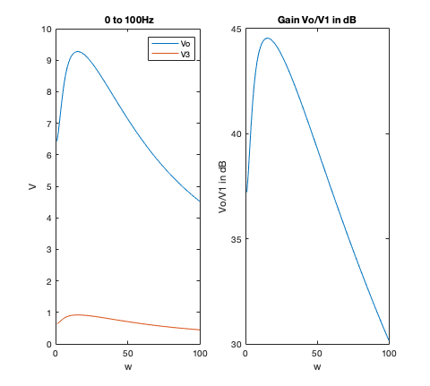
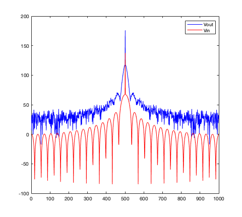

ELEC 4700 ASSIGNMENT 4
Contents
Part 1
clearvars clearvars -GLOBAL close all set(0,'DefaultFigureWindowStyle', 'docked') sizex = 6; sizey = 6; % Voltage Range Vmin = 0.1; Vmax = 10; % Components Cap = 0.25; R1 = 1; R2 = 2; L = 0.2; % R3 = R3finder(Vmin,Vmax,20); R3 = 10; alpha = 100; R4 = 0.1; Ro = 1000; omega = 10; % C Matrix C = zeros(sizex,sizey); C(2,1) = -Cap; C(2,2) = Cap; C(6,6) = L; % G Matrix G = zeros (sizex, sizey); G(1,1) = 1; G(2,1) = -1/R1; G(2,2) = (1/R1) + (1/R2); G(2,6) = -1; G(3,3) = 1/R3; G(3,6) = 1; G(4,3) = -alpha/R3; G(4,4) = 1; G(5,4) = -R4; G(5,5) = R4 - (1/Ro); G(6,2) = 1; G(6,3) = -1;
(a) C and G matrices
C G
C =
0 0 0 0 0 0
-0.2500 0.2500 0 0 0 0
0 0 0 0 0 0
0 0 0 0 0 0
0 0 0 0 0 0
0 0 0 0 0 0.2000
G =
1.0000 0 0 0 0 0
-1.0000 1.5000 0 0 0 -1.0000
0 0 0.1000 0 0 1.0000
0 0 -10.0000 1.0000 0 0
0 0 0 -0.1000 0.0990 0
0 1.0000 -1.0000 0 0 0
(b) Plot of DC sweep
F Vector
F = zeros(1,sizey); stepsize = 21; VoutVect = zeros(1,stepsize); V3Vect = zeros(1,stepsize); % DC Sweep for i = -10:10 F(1) = i; % V vector V = (G + omega.*C)\F'; VoutVect(i+11) = V(5); V3Vect(i+11) = V(3); end figure plot (linspace(-10,10,stepsize),VoutVect); title('-10V to 10V'); hold on plot (linspace(-10,10,stepsize), V3Vect); legend('Vo', 'V3'); xlabel('Vin'); ylabel('V');
(c) Plots from AC case of Gain AC Sweep
F = zeros(1,sizey); F(1) = 1; stepsize = 100; VoutVect = zeros(1,stepsize); V3Vect = zeros(1,stepsize); omega = linspace(1,100,stepsize); for i = 1:stepsize V = (G + 1j*omega(i).*C)\F'; VoutVect(i) = V(5); V3Vect(i) = V(3); end figure subplot(1,2,1); plot (omega,abs(VoutVect)); title(' 0 to 100Hz'); hold on plot (omega, abs(V3Vect)); legend('Vo', 'V3'); xlabel('w'); ylabel('V'); gain = 20 * log(abs(VoutVect./F(1))); subplot(1,2,2); plot(omega, gain); title('Gain Vo/V1 in dB'); xlabel('w'); ylabel('Vo/V1 in dB');
(d) (e) Plot of Vin and Vout from numerical solution in time domain and fourier transforms
deltaT = 1e-3; % A vector A = (C./deltaT) + G; timesteps = 1000; Vp = zeros(sizey,1); % F vector F = zeros(1,sizey); % Vin and Vout Vectors VinVect = zeros(timesteps,1); VoutVect = zeros(timesteps,1); % Time simulation - step function timeVector = linspace(1,timesteps,timesteps); figure for i = 2:timesteps % F vector if (i == 30) F(1) = 1; end V = A\(((C * Vp)./deltaT) + F'); subplot(2,3,1) plot([timeVector(i-1) timeVector(i)],[Vp(1) V(1)],'-r'); hold on plot([timeVector(i-1) timeVector(i)],[Vp(5) V(5)],'-b'); pause(0.01); VinVect(i) = V(1); VoutVect(i) = V(5); Vp = V; end legend('Vin', 'Vout'); title('Time Simulation - Step function'); xlim([0 1000]); ylim([0 12]); xlabel('Time (ms)'); ylabel('Voltage'); subplot(2,3,2) plot(linspace(1,1000,1000),fftshift(20*log(fft(VoutVect))),'-b'); hold on plot(linspace(1,1000,1000),fftshift(20*log(fft(VinVect))),'-r'); legend('Vout', 'Vin'); xlabel('Frequency'); ylabel('Voltage (dB)'); % Time simulation - sinusoidal function % Vin and Vout Vectors VinVect = zeros(timesteps,1); VoutVect = zeros(timesteps,1); Vp = zeros(sizey,1); for i = 2:timesteps % F vector F(1) = sin(2 * pi * (1/0.03) * timeVector(i) * deltaT); V = A\(((C * Vp)./deltaT) + F'); subplot(2,3,3) plot([timeVector(i-1) timeVector(i)],[Vp(1) V(1)],'-r'); hold on plot([timeVector(i-1) timeVector(i)],[Vp(5) V(5)],'-b'); pause(0.01); VinVect(i) = V(1); VoutVect(i) = V(5); Vp = V; end legend('Vin', 'Vout'); title('Time Simulation - Sinusoidal function'); % xlim([0 1000]); % ylim([0 12]); xlabel('Time (ms)'); ylabel('Voltage'); subplot(2,3,4) plot(linspace(1,1000,1000),fftshift(20*log(fft(VoutVect))),'-b'); hold on plot(linspace(1,1000,1000),fftshift(20*log(fft(VinVect))),'-r'); legend('Vout', 'Vin'); xlabel('Frequency'); ylabel('Voltage (dB)'); % Time simulation - gaussian pulse % Vin and Vout Vectors VinVect = zeros(timesteps,1); VoutVect = zeros(timesteps,1); Vp = zeros(sizey,1); pulsepos = 30 * randi(10); % pulsepos = 5; delayCnt = 0; deltaT = 0.06; for i = 2:timesteps % F vector if (i >= pulsepos) delayCnt = delayCnt + 1; if(delayCnt == 60) F(1) = 1; delayCnt = 0; end end V = A\(((C * Vp)./deltaT) + F'); subplot(2,3,5) plot([timeVector(i-1) timeVector(i)],[Vp(1) V(1)],'-r'); hold on plot([timeVector(i-1) timeVector(i)],[Vp(5) V(5)],'-b'); pause(0.01); VinVect(i) = V(1); VoutVect(i) = V(5); Vp = V; end legend('Vin', 'Vout'); title('Time Simulation - Step function (delayed)'); xlim([0 1000]); % ylim([0 12]); xlabel('Time (ms)'); ylabel('Voltage'); subplot(2,3,6) plot(linspace(1,1000,1000),fftshift(20*log(fft(VoutVect))),'-b'); hold on plot(linspace(1,1000,1000),fftshift(20*log(fft(VinVect))),'-r'); legend('Vout', 'Vin'); xlabel('Frequency'); ylabel('Voltage (dB)');
Warning: Imaginary parts of complex X and/or Y arguments ignored. Warning: Imaginary parts of complex X and/or Y arguments ignored. Warning: Imaginary parts of complex X and/or Y arguments ignored. Warning: Imaginary parts of complex X and/or Y arguments ignored. Warning: Imaginary parts of complex X and/or Y arguments ignored. Warning: Imaginary parts of complex X and/or Y arguments ignored.
Part 2
clearvars clearvars -GLOBAL close all set(0,'DefaultFigureWindowStyle', 'docked') sizex = 6; sizey = 6; % Voltage Range Vmin = 0.1; Vmax = 10; % Components Cap = 0.25; R1 = 1; R2 = 2; L = 0.2; % R3 = R3finder(Vmin,Vmax,20); R3 = 10; alpha = 100; R4 = 0.1; Ro = 1000; omega = 10; % Noise components In = 0.001; Cn = 1e-5; % C Matrix C = zeros(sizex,sizey); C(2,1) = -Cap; C(2,2) = Cap; C(3,3) = Cn; C(6,6) = L; % G Matrix G = zeros (sizex, sizey); G(1,1) = 1; G(2,1) = -1/R1; G(2,2) = (1/R1) + (1/R2); G(2,6) = -1; G(3,3) = 1/R3; G(3,6) = 1; G(4,3) = -alpha/R3; G(4,4) = 1; G(5,4) = -R4; G(5,5) = R4 - (1/Ro); G(6,2) = 1; G(6,3) = -1;
(a) Updated C and G matrices
C G
C =
0 0 0 0 0 0
-0.2500 0.2500 0 0 0 0
0 0 0.0000 0 0 0
0 0 0 0 0 0
0 0 0 0 0 0
0 0 0 0 0 0.2000
G =
1.0000 0 0 0 0 0
-1.0000 1.5000 0 0 0 -1.0000
0 0 0.1000 0 0 1.0000
0 0 -10.0000 1.0000 0 0
0 0 0 -0.1000 0.0990 0
0 1.0000 -1.0000 0 0 0
(b) Plot of Vout with noise source
deltaT = 1e-3; % A vector A = (C./deltaT) + G; timesteps = 1000; Vp = zeros(sizey,1); % F vector F = zeros(1,sizey); F(3) = In; % Vin and Vout Vectors VinVect = zeros(timesteps,1); VoutVect = zeros(timesteps,1); % Time simulation - step function timeVector = linspace(1,timesteps,timesteps); figure for i = 2:timesteps % F vector if (i == 30) F(1) = 1; end V = A\(((C * Vp)./deltaT) + F'); plot([timeVector(i-1) timeVector(i)],[Vp(1) V(1)],'-r'); hold on plot([timeVector(i-1) timeVector(i)],[Vp(5) V(5)],'-b'); pause(0.01); VinVect(i) = V(1); VoutVect(i) = V(5); Vp = V; F(3) = In*randn(); end xlim([0 1000]); ylim([0 12]); xlabel('Time (ms)'); ylabel('Voltage'); legend('Vin', 'Vout'); title('Time Simulation - Vout with noise source');
(c) Fourier Transform plot
figure plot(linspace(1,1000,1000),fftshift(20*log(fft(VoutVect))),'-b'); hold on plot(linspace(1,1000,1000),fftshift(20*log(fft(VinVect))),'-r'); legend('Vout', 'Vin');
Warning: Imaginary parts of complex X and/or Y arguments ignored. Warning: Imaginary parts of complex X and/or Y arguments ignored.
(e) 3 plots of Vout with different Cout
Cout = 1e-5
C(3,3) = 1e-5; deltaT = 1e-3; % A vector A = (C./deltaT) + G; timesteps = 1000; Vp = zeros(sizey,1); % F vector F = zeros(1,sizey); F(3) = In; % Vin and Vout Vectors VinVect = zeros(timesteps,1); VoutVect = zeros(timesteps,1); % Time simulation - step function timeVector = linspace(1,timesteps,timesteps); for i = 2:timesteps % F vector if (i == 30) F(1) = 1; end V = A\(((C * Vp)./deltaT) + F'); VinVect(i) = V(1); VoutVect(i) = V(5); Vp = V; F(3) = In*randn(); end plot(linspace(1,1000,1000),fftshift(20*log(fft(VoutVect))),'-b'); hold on plot(linspace(1,1000,1000),fftshift(20*log(fft(VinVect))),'-r'); legend('Vout', 'Vin'); xlabel('Frequency'); ylabel('Voltage'); title('Frequency Domain - Noisy (Cn = 1e-5)');
Warning: Imaginary parts of complex X and/or Y arguments ignored. Warning: Imaginary parts of complex X and/or Y arguments ignored.
Cout = 1e-4
C(3,3) = 1e-4; deltaT = 1e-3; % A vector A = (C./deltaT) + G; timesteps = 1000; Vp = zeros(sizey,1); % F vector F = zeros(1,sizey); F(3) = In; % Vin and Vout Vectors VinVect = zeros(timesteps,1); VoutVect = zeros(timesteps,1); % Time simulation - step function timeVector = linspace(1,timesteps,timesteps); for i = 2:timesteps % F vector if (i == 30) F(1) = 1; end V = A\(((C * Vp)./deltaT) + F'); VinVect(i) = V(1); VoutVect(i) = V(5); Vp = V; F(3) = In*randn(); end plot(linspace(1,1000,1000),fftshift(20*log(fft(VoutVect))),'-b'); hold on plot(linspace(1,1000,1000),fftshift(20*log(fft(VinVect))),'-r'); legend('Vout', 'Vin'); xlabel('Frequency'); ylabel('Voltage'); title('Frequency Domain - Noisy (Cn = 1e-4)');
Warning: Imaginary parts of complex X and/or Y arguments ignored. Warning: Imaginary parts of complex X and/or Y arguments ignored.
Cout = 1e-3
C(3,3) = 1e-3; deltaT = 1e-3; % A vector A = (C./deltaT) + G; timesteps = 1000; Vp = zeros(sizey,1); % F vector F = zeros(1,sizey); F(3) = In; % Vin and Vout Vectors VinVect = zeros(timesteps,1); VoutVect = zeros(timesteps,1); % Time simulation - step function timeVector = linspace(1,timesteps,timesteps); for i = 2:timesteps % F vector if (i == 30) F(1) = 1; end V = A\(((C * Vp)./deltaT) + F'); VinVect(i) = V(1); VoutVect(i) = V(5); Vp = V; F(3) = In*randn(); end plot(linspace(1,1000,1000),fftshift(20*log(fft(VoutVect))),'-b'); hold on plot(linspace(1,1000,1000),fftshift(20*log(fft(VinVect))),'-r'); legend('Vout', 'Vin'); xlabel('Frequency'); ylabel('Voltage'); title('Frequency Domain - Noisy (Cn = 1e-3)');
Warning: Imaginary parts of complex X and/or Y arguments ignored. Warning: Imaginary parts of complex X and/or Y arguments ignored.
(f) 2 plots of Vout with different time stops delta = 1e-3;
deltaT = 1e-3; C(3,3) = 1e-5; % A vector A = (C./deltaT) + G; timesteps = 1000; Vp = zeros(sizey,1); % F vector F = zeros(1,sizey); F(3) = In; % Vin and Vout Vectors VinVect = zeros(timesteps,1); VoutVect = zeros(timesteps,1); % Time simulation - step function timeVector = linspace(1,timesteps,timesteps); figure for i = 2:timesteps % F vector if (i == 30) F(1) = 1; end V = A\(((C * Vp)./deltaT) + F'); plot([timeVector(i-1) timeVector(i)],[Vp(1) V(1)],'-r'); hold on plot([timeVector(i-1) timeVector(i)],[Vp(5) V(5)],'-b'); pause(0.01); VinVect(i) = V(1); VoutVect(i) = V(5); Vp = V; F(3) = In*randn(); end xlim([0 1000]); ylim([0 12]); xlabel('Time (ms)'); ylabel('Voltage'); legend('Vin', 'Vout'); title('Time Simulation - delta = 1e-3');
delta = 1e-6;
deltaT = 1e-6; C(3,3) = 1e-5; % A vector A = (C./deltaT) + G; timesteps = 1000; Vp = zeros(sizey,1); % F vector F = zeros(1,sizey); F(3) = In; % Vin and Vout Vectors VinVect = zeros(timesteps,1); VoutVect = zeros(timesteps,1); % Time simulation - step function timeVector = linspace(1,timesteps,timesteps); figure for i = 2:timesteps % F vector if (i == 30) F(1) = 1; end V = A\(((C * Vp)./deltaT) + F'); plot([timeVector(i-1) timeVector(i)],[Vp(1) V(1)],'-r'); hold on plot([timeVector(i-1) timeVector(i)],[Vp(5) V(5)],'-b'); pause(0.01); VinVect(i) = V(1); VoutVect(i) = V(5); Vp = V; F(3) = In*randn(); end xlim([0 1000]); ylim([0 12]); xlabel('Time (ms)'); ylabel('Voltage'); legend('Vin', 'Vout'); title('Time Simulation - delta = 1e-3');
Part 3
(a) Description of steps needed to implement the non-linearity This can be done by introducing the B matrix as discussed in class. All matrices will remain the same. Also the equation with V4 = alpha*I3 will change to include the new terms and constants. B(4) matrix will also include beta(^1/2) - gamma (^1/3). The rest of B must be zeros.